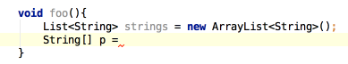

Pressing the same shortcut after you have invoked Smart-type Completion when an array type is expected will search for collections with same component type and suggest to convert them using toArray() call.
